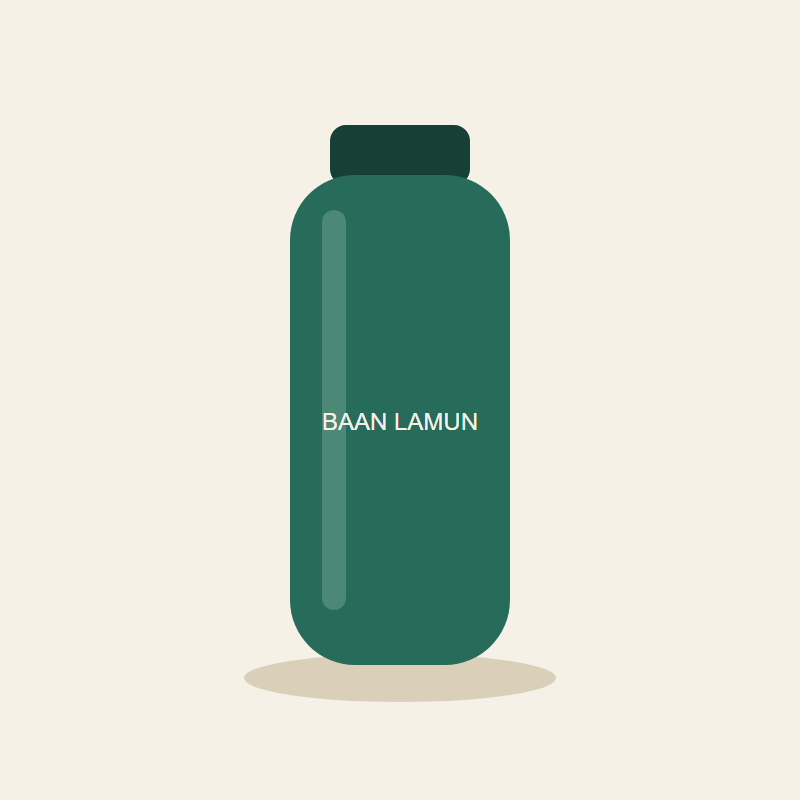

AI WORK PLAYBOOK · ตัวอย่างจริง 236-1
รูปสินค้า → แคปชันโพสต์
1 ใส่
รูปสินค้า 1 รูป ใส่ input/

desk-bottle.png

2 สั่ง
คำสั่งพร้อมคัดลอก
ดูรูปสินค้าใน input/ เขียนแคปชัน Facebook 3 แบบ (สนุก / ให้ข้อมูล / กระตุ้นซื้อ) แต่ละแบบไม่เกิน 4 บรรทัด ใส่ hashtag ไทย 5 อังกฤษ 5 บันทึกใน output/
วางคำสั่งใน ChatGPT Work หรือ Claude Desktop หลังเลือกโฟลเดอร์งาน
3 ได้
ดูผลตัวอย่างจาก
คัดจาก facebook-captions.md
โต๊ะทำงานดูเรียบร้อยแล้ว ขาดแค่เพื่อนร่วมโต๊ะสีเขียวคนนี้ ขวด BAAN LAMUN พร้อมเติมความละมุนให้ทุกวัน ขวด BAAN LAMUN มาในโทนสีเขียวเข้ม พร้อมฝาปิดสีเข้ม ดีไซน์เรียบง่าย วางคู่กับมุมทำงานได้สบายตา เติมสีเขียวละมุนให้มุมโปรดด้วยขวด BAAN LAMUN
คัดจาก facebook-captions_desk-bottle.md
โต๊ะทำงานวันนี้มีเพื่อนใหม่ สีเขียวเข้ม ยืนเงียบๆ แต่แอบเท่ ใครเดินผ่านก็ต้องหันมองสักที ส่วนเราน่ะ หยิบขึ้นมาจิบเพลินจนลืมเช็กอีเมล BAAN LAMUN ขวดที่ทำให้การดื่มน้ำเป็นเรื่องน่าทำขึ้นมาจริงๆ BAAN LAMUN ขวดทรงเรียบ ตัวขวดสีเขียวเข้ม ฝาสีเข้มกว่าเล็กน้อย